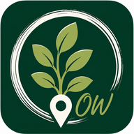

Hilf mit, invasive Pflanzen in unserer Region zu erfassen und ihre Ausbreitung besser zu dokumentieren.
Hast du zuvor eine Meldung ohne Internet erfasst? Hier kannst du gespeicherte Meldungen übertragen, sobald wieder eine Internetverbindung besteht.
Du möchtest unterwegs eine Pflanze melden, hast dort aber keinen Empfang? Bereite die Meldestelle einmal vorher vor:
1. Öffne diese Meldestelle einmal, solange du Internet hast.
2. Speichere diese Seite in deinem Browser als Favorit oder Lesezeichen.
3. Unterwegs öffnest du einen neuen Browser-Tab und rufst die Meldestelle über diesen Favoriten wieder auf.
✓ Jetzt kannst du auch ohne Internet eine Meldung erfassen.
📍 Ohne Internet wird bei der Standorterfassung möglicherweise keine Karte angezeigt. Der GPS-Standort kann trotzdem erfasst werden.
Sobald wieder Internet verfügbar ist, kannst du deine gespeicherten Meldungen über „Offlinedaten übertragen“ senden.
Wähle aus, wie der Pflanzenbestand auf der Karte erfasst werden soll.
Markiere bitte den Fundort der Pflanze.
Deine Meldung kann trotzdem aufgenommen werden.
Offlinedaten können erst übertragen werden, wenn wieder eine Internetverbindung besteht. Deine gespeicherten Meldungen bleiben erhalten.
Eine kurze Übersicht über invasive Neophyten in unserer Region – damit du beim Entdecken schon einen Verdacht hast, worum es sich handeln könnte. Tippe auf ein Bild, um es größer zu sehen.
Bildquelle: Wikipedia (jeweils verlinkt, freie Lizenzen). Bei Unsicherheit gilt: Melden lohnt sich immer – die genaue Bestimmung übernehmen wir.
Verantwortlich für den Inhalt dieser Seite:
Oliver Wenzek
E-Mail: naturmeldung.erzgebirge@gmail.com
Dieses Angebot ist ein privates, ehrenamtliches Projekt zur Erfassung invasiver Pflanzenarten. Es handelt sich derzeit nicht um ein offizielles Angebot des BUND oder einer seiner Gliederungen.
Verantwortlich für die Datenverarbeitung auf dieser Seite ist Oliver Wenzek (Kontakt siehe Impressum oben).
Die Daten dienen ausschließlich der Erfassung und Dokumentation von Vorkommen invasiver Pflanzenarten in der Region, um deren Ausbreitung besser einschätzen und ggf. Maßnahmen einleiten zu können. Optionale Kontaktdaten werden ausschließlich genutzt, um bei Rückfragen zu einer konkreten Meldung Kontakt aufzunehmen.
Diese Seite nutzt folgende externe Dienste, die beim Aufruf der Seite bzw. bei einer Meldung technisch notwendig Daten (in der Regel IP-Adressen) verarbeiten:
Es werden keine eigenen Cookies gesetzt und keine Analyse- oder Trackingtools (z. B. Google Analytics) eingesetzt.
Meldedaten verbleiben in KoboToolbox, bis sie manuell gelöscht werden. Eine automatische Löschfrist ist derzeit nicht festgelegt.
Du hast das Recht auf Auskunft, Berichtigung, Löschung und Einschränkung der Verarbeitung deiner personenbezogenen Daten sowie das Recht auf Datenübertragbarkeit. Wende dich hierzu an die oben genannte Kontaktadresse. Außerdem besteht ein Beschwerderecht bei der zuständigen Datenschutzaufsichtsbehörde.